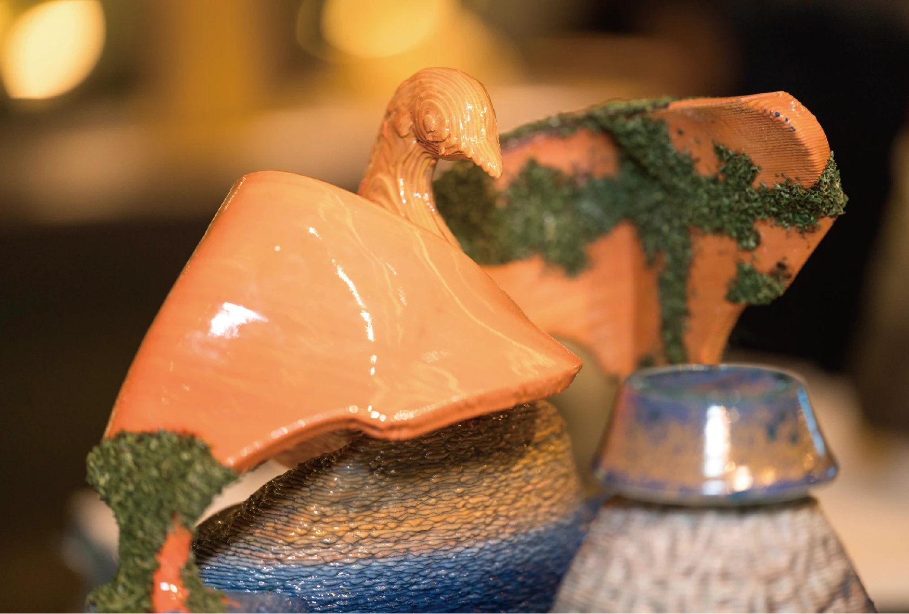
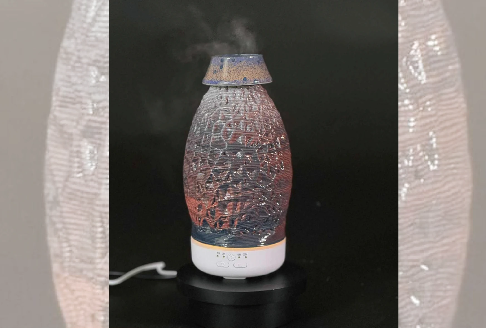
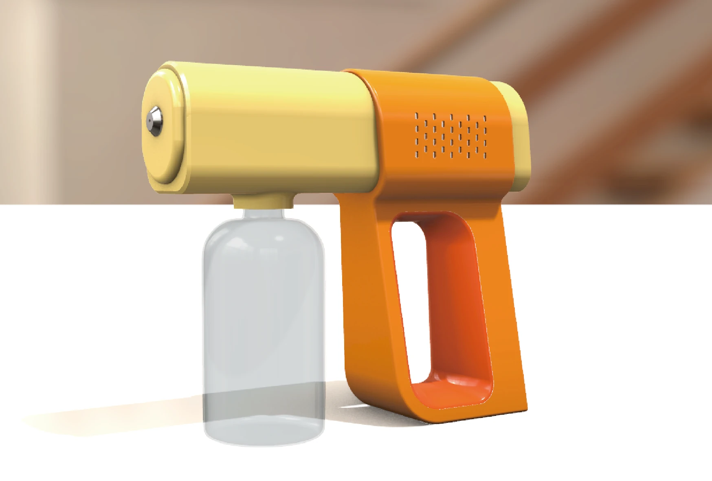
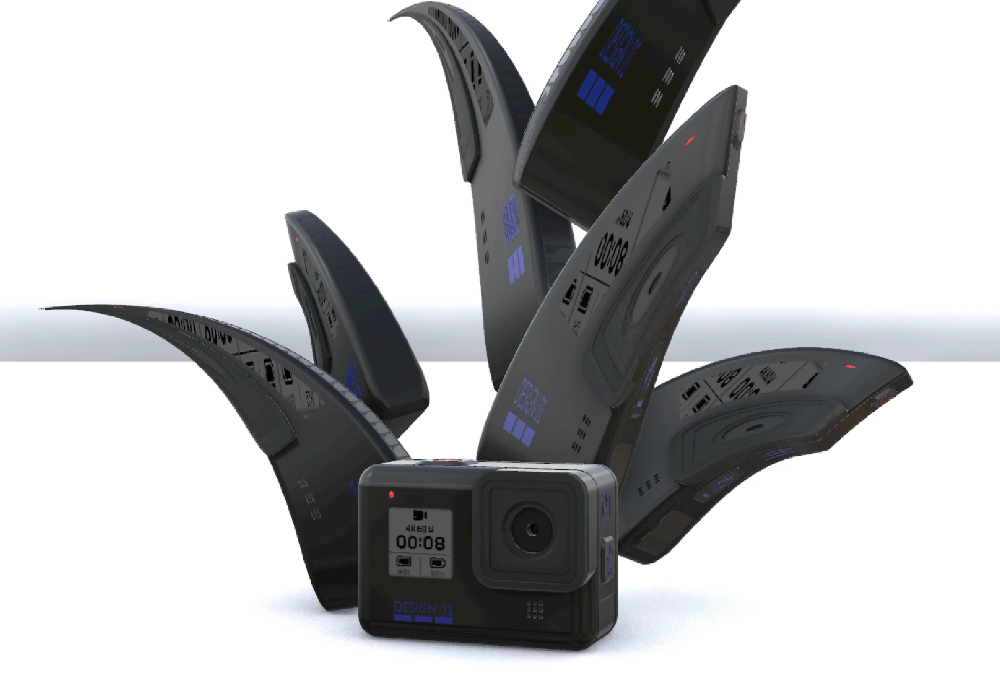

01 / STL MODEL

1 / 2
模型載入中…
3D MODELING / 01
鳳凰陶瓷3D列印模型
利用列印技術突破傳統手捏陶限制
模型載入中…
SELECTED FORM STUDIES
拖曳旋轉模型，滾輪／雙指縮放。

模型載入中…
利用列印技術突破傳統手捏陶限制

模型載入中…
利用參數化3D建模技術製作外罩，結合陶瓷不上釉會吸水的特性減少上方因為接觸水霧而容易有水滴產生的問題

模型載入中…
利用多種複合曲面組合建立實體模型

模型載入中…
利用擠出與布林運算所建立的實體